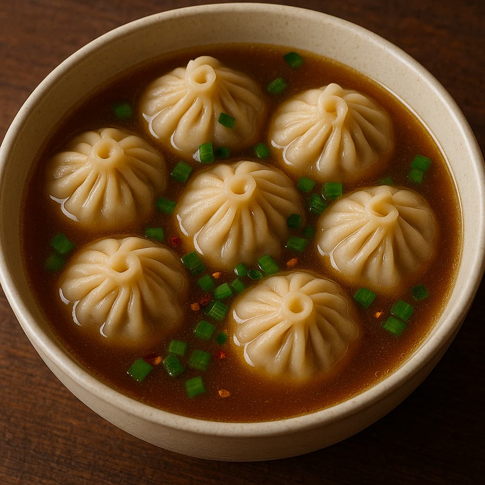

🥟 Sejarah & Informasi Lengkap Soup Dumpling (Xiao Long Bao)
🥢 Sejarah & Latar Belakang
Soup Dumpling (小籠包 - Xiǎolóngbāo) adalah pangsit kukus berisi kaldu yang berasal dari wilayah Jiangnan, khususnya Shanghai. Hidangan ini kini menjadi ikon kuliner Taiwan, terutama melalui restoran terkenal seperti Din Tai Fung.
- Asal mula: Berasal dari Dinasti Qing di Nanxiang, Shanghai.
- Penyebaran: Dibawa ke Taiwan oleh imigran Tiongkok dan dipopulerkan secara global oleh Din Tai Fung.
- Ciri khas: Kulit tipis, isi daging babi cincang, dan kaldu panas di dalam.
🧧 Tradisi & Budaya
Soup dumpling sering disantap sebagai hidangan spesial dalam perayaan atau makan keluarga.
- Dimakan saat perayaan Imlek atau reuni keluarga.
- Dihidangkan dengan cuka hitam dan irisan jahe.
- Menjadi simbol kehangatan dan keterampilan memasak.
🍥 Komposisi & Gizi
Soup Dumpling kaya rasa meskipun berukuran kecil:
Bahan Utama:
- Daging babi cincang (atau ayam)
- Kaldu gelatin (yang mencair saat dikukus)
- Adonan tepung tipis untuk kulit
- Pelengkap: jahe, cuka hitam
Informasi Gizi (rata-rata per 6 buah):
- Kalori: ±300–400 kkal
- Protein: 15–20g
- Lemak: 15–25g
- Karbohidrat: 30–40g
- Sodium: Sedang – Tinggi
📖 Resep & Cara Membuat:
Kami menyediakan resep dan cara membuat soup dumpling otentik. Klik di sini untuk melihat resep lengkapnya!
📍 Rekomendasi Tempat Makan di Taiwan
- Din Tai Fung (鼎泰豐) ⭐️⭐️⭐️⭐️⭐️ – Taipei
- Hang Zhou Xiao Long Bao ⭐️⭐️⭐️⭐️⭐️ – Taipei
- Jin Ji Yuan (金雞園) ⭐️⭐️⭐️⭐️ – Taipei
- Yong He Soy Milk King ⭐️⭐️⭐️ – New Taipei
📍 Rekomendasi Tempat di Indonesia
Jakarta:
- Din Tai Fung ⭐️⭐️⭐️⭐️ – Plaza Senayan, Grand Indonesia
- Paradise Dynasty ⭐️⭐️⭐️ – Plaza Senayan, PIK Avenue
- Crystal Jade ⭐️⭐️⭐️ – Grand Indonesia
Bandung:
- Dim Sum Inc. ⭐️⭐️⭐️⭐️ – Cihampelas
- Fang Dimsum & Noodles Bar ⭐️⭐️⭐️ – Paris Van Java (PVJ)